In diesem einfachen
Tutorial wird eine kleine Anwendung mit einem "Über"-Dialog,
eine Menüleiste erstellt, sowie der Code zum Öffnen und
Schließen des Dialoges erstellt. Sie verwenden das SWING
GroupLayout zur Anordnung der Elemente auf beiden JFrame-Komponenten
und im JDialog verwenden. Danach werden Swing Aktionen verwendet, um
den Oberflächenelementen Funktionalitäten zuzuordnen.
Themen:
-
Anordnen
von Elementen mit GroupLayout - Verankern und Positionierung sowie
Größe der Elemente mit Hilfe des Drop-down-Menüs
-
Hinzufügen
von Aktionen zu Menüpunkten und Schaltflächen - und Verknüpfung von
"Accelerators" und "Hot Keys" (Mnemonics) mit Aktionen
-
Navigieren
zwischen visuellen Elemente im Baum und ihren Code
-
Hinzufügen
mehrerer Elemente des gleichen Typs zu einem Formular
-
Multi-Auswahl Elemente
-
"Surround
by" Aktion - nützlich für die Zeiten, in denen man erkennt, dass man
einen Scroll-Bereich
-
Erzeugung
mehrerer visueller "root" Elemente im gleichen Formular - in diesem
Fall ein JFrame und ein JDialog
-
Ändern
von Eigenschaften in den Rubriken "Basic " und "Expert" im
"GUI-Eigenschaften"-Editor.
Zunächst
benötigen Sie ein Java-Projekt und (vorzugsweise) ein Paket für
die enthaltenen Klassen.
Strg
+ N
ist ein schneller Weg, um den "Create"-Dialog zu öffnen,
mit dem Sie diese Schritte durchführen können, ansonsten
per rechter Maustatste auf das Package
src->New->Other->GUI-Forms->Swing->JFrame.
Erstellen des
Haupt-JFrame
Erzeugung eines
JFrame
Strg
+ N zeigt den "Create"-Dialog, aus dem Sie "GUI-Formulare>
Swing-> JFrame" auswählen sollten.
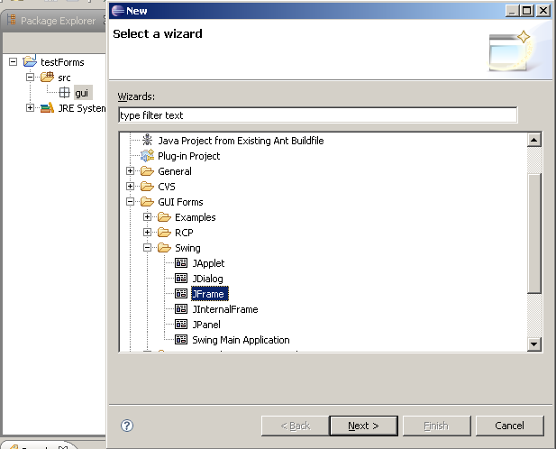
Wählen Sie Ihr
Editor-Präferenzen
Sie haben einen Jigloo
Editor, dessen Aussehen wir ändern wollen. Klicken Sie auf den
"Open Jigloo Präferences Editor"-Knopf in der
Symbolleiste des Jigloo Editors links. Das „Eclipse-preferences“
Fenster erscheint ein Fenster und Jigloo ist ausgewählt. Wählen
Sie "Appearance and Behaviour" und dann "Tabbed
Panels". Dies ist nützlich, wenn Sie Ihren Design-Bereich
maximieren wollen (aber "Split-pane" kann nützlich
sein, wenn Sie sofort die Verbindung zwischen Code und GUI sehen
wollen).

Nun
klicken Sie auf "OK" und schließen und den Jigloo
Editor und öffnen Sie ihn wieder (per rechter Maustaste auf
Datei im Package Explorer->Open with->Form Editor).
Wenn
sich Ihre Java-Klasse nicht sofort wieder im Jigloo Editor öffnet,
können Sie sicherstellen, dass das Formular Jigloo Editor
verwendet, indem Sie mit der rechten Maustaste auf die Klasse und die
Auswahl "Open with -> Form-Editor" klicken.
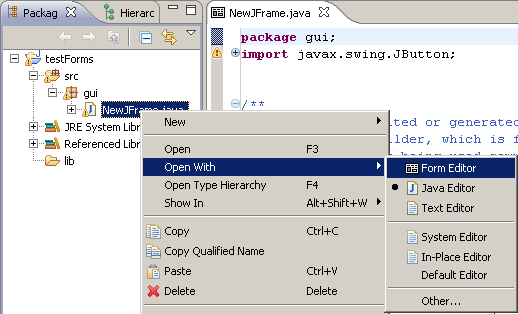
Maximieren von Jigloo
Wahrscheinlich finden
Sie die Arbeit leichter, wenn Sie so viel wie möglich von dem
GUI-Design sehen können, das Sie erstellen. Also klicken Sie
doppelt auf den Registerkopf der Registerkarte des Editors, und er
wird den meisten Teil der Oberfläche einnehmen... Sie haben so
einen Überblick über den Property-Editor und den
Form-Designer.
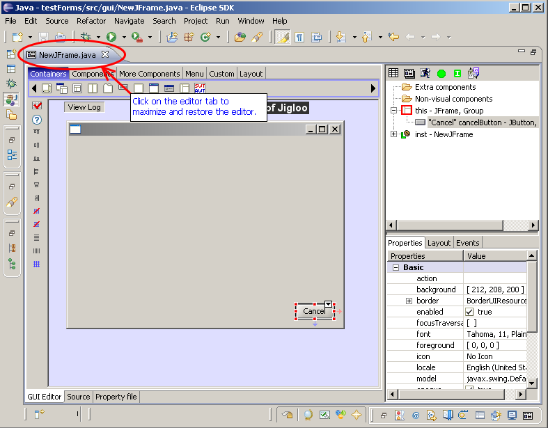
Das Layout als
GroupLayout erstellen
Sie können nun
entweder das GroupLayout Symbol in der Kategorie "Layout"-Palette
auswählen, oder mit der rechten Maustaste auf den JFrame
klicken, und "Set Layout-> GroupLayout" wählen.
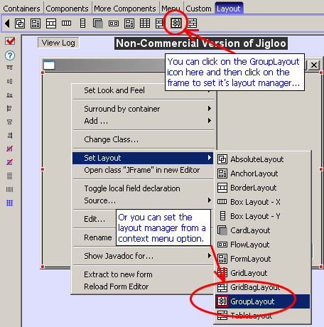
Wenn
Sie Java 6 verwenden, dann wird Code für das
javax.swing.GroupLayout, (das Teil der Java 6 ist) generiert.
Wenn
Sie sich nicht mit Java 6 arbeiten, wird Jigloo
org.jdesktop.layout.GroupLayout verwenden (das Äquivalent des
swing GroupLayout), und Jigloo wird Sie wissen lassen, dass sie die
Datei Swing-Layout-1.0.jar Datei Ihrem hinzuzufügen müssen.

Fügen Sie
Schaltflächen OK und Abbrechen ein
Wählen Sie das
Symbol aus der JButton "Components"-Palette und bewegen Sie
den Cursor nach unten rechts in der Form, bis er einrastet.
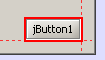
Im
dann sich öffnenden Dialog können Sie Name und Text (und
Icon-Set, wenn Sie möchten) für die Schaltfläche
eingeben, sofern Sie diese Option in den "Jigloo preferences"
(Prompt for name when adding components) ausgewählt haben. Sie
können dies aber auch später tun. Wir erstellen so die
Schaltfläche „Cancel“ (deutsch:
"Abbrechen").

Fügen
Sie auch einen „OK“-Knopf hinzu. (Mit Strg und Shift
können Sie mehrere Schaltflächen einfügen, ohne zur
Komponentenpalette zurückkehren zu müssen).
.
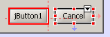
Wenn
Sie die Knöpfe in der unteren rechten Ecke des Formulars
positioniert haben, sollten Sie (wie im Bild oben) einen schwachen
roten Pfeil sehen, der Den Knopf mit der rechten Seite des Formulars
verbindet, sowie einen blauen Pfeil, der ihn an den unteren Rand des
Formulars bindet.
Sie können die Verankerung ändern,
indem Sie den Knopf an einen anderen Rand schieben, oder Sie
verwenden hierfür das DropDown-Element in der oberen rechen Ecke
des Elements.
Es gibt dort eine Menge Menü-Optionen, die das
Verhalten von Knöpfen bei Größenänderung des
Formulars betreffen.
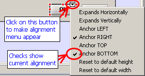
Beschriften Sie die
Schaltflächen mit "OK" und "Abbrechen" –
Sie können die Beschriftung mit einem Doppelklick auf die
Schaltfläche zum Bearbeiten des Textes öffnen, oder
verwenden Sie die Eigenschaft "Text".
Erstellen Sie die
Knöpfe OK und Abbrechen mit gleicher Breite und mit der gleichen
Schriftart
Wählen Sie die
Schaltflächen OK und Abbrechen aus. Dazu gibt es zwei
Möglichkeiten:
-
Dies "Gummiband"-Technik - Shift, und ziehen Sie dann die Maus über die
beiden Tasten, dann die Maustaste loslassen, oder
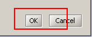
-
STRG und einzeln anklicken
Klicken Sie auf das
"Make selected elements the same width"-Symbol in der
Symbolleiste Alignement.

Wählen
Sie dann die OK-Taste. Das Symbol hat sich nun geändert: "Unlink
the selected element's width from all other elements" kann
verwendet werden, um ein Element von der gemeinsamen Breite zu
lösen.
Nun wählen Sie beide Tasten wieder aus und
ändern Sie die Schrift auf "Bold (deutsch: fett)",
wobei Sie auf die Eigenschaft "Font" in den
"GUI-Eigenschaften" anzeigen lassen, indem Sie auf den
kleinen “..."-Knopf klicken.

Ergänzen Sie
eine JTable-Komponente
Fügen Sie ein
JTable mit der "Components"-Palette oben links ein.
Oops – eigentlich
sollte zuerst ein JScrollPane Element eingefügt werden, auf dem
sich das JTable befinden soll. Anstatt die Aktion rückgängig
zu machen, können Sie mit der rechten Maustaste auf den JTable
klicken und "Surround by-> JScrollPane"
wählen.

Wählen
Sie nun die JScrollPane (entweder in der Gliederung, oder durch einen
Klick auf den Scrollbalken. Sollte ein Kindelement allen Platz der
JScrollpane bedecken, und es ist keine Bildlaufleiste zu sehen, dann
klicken Sie in die Nähe des Randes der JScrollpane, um diese zu
markieren). Ziehen Sie dann die Seite oder Ecke des JScrollPane so,
dass sie sich über die ganze Breite erstreckt, und ein bisschen
größer ist. Auch hier sollten rote und blaue Pfeile nun
anzeigen, dass es sowohl auf der linken als auch der rechten Seite
der Form verankert ist.
Wenn Sie das Dropdown-Menü
öffnen, können Sie sehen, dass "Expands Horizontally"
aktiviert ist. Sie können das Menü zum Ändern der
Eigenschaften verwenden. Beachten Sie, dass Sie "Expands
Horizontally" deaktivieren müssten, um es rechts ODER links
zu verankern.
Fügen
Sie zwei
JTextField (mit Quick-repeat) und einen JButton ein.
Nur um ein Gefühl
für das GroupLayout zu bekommen, fügen Sie zwei JTextFields
und einen JButton ein. Dann wählen Sie sie alle aus, und wählen
bei gedrückter Strg-taste per rechter Maustaste "Surround
by-> JPanel", und wählen Sie für das JPanel das
Layout „GroupLayout“. Sie können die Größe
des Panels ändern und es und verschieben, sowie die Größe
der Elemente, bis es aussehen, was ist unten dargestellt.
Dann
setzen Sie die "Border"-Eigenschaft des JPanels auf
"TitledBorder", um etwas Text („Group One“)
beizufügen.
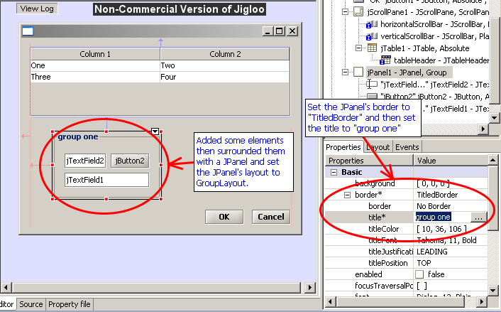
Umgeben Sie das
JPanel mit einem JTabbedPane indem Sie das JPanel kopieren und in das
JTabbedPane einfügen
Dies zeigt nur das
Kopieren und Einfügen - oder Sie könnten versuchen, mehrere
Komponenten zu kopieren und einzufügen.
Ergänzen Sie
eine Menüleiste (JMenuBar) mit den Menüs „Datei“
und „Hilfe“
Nun etwas besonders
nützliches: Fügen Sie ein JMenuBar mittels der
"Menu"-Palette ein.
.
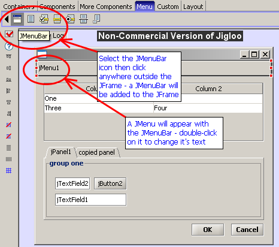
Nun
doppelklicken Sie auf den "jMenu1"-Menü und ändern
Sie den Text in "File" (deutsch: Datei). Dann fügen
Sie ein neues JMenu "Help" in die Menüleiste ein.

Fügen Sie eine
"About"-Aktion (Deutsch: über) und einen Menüpunkt
in das Hilfe-Menü
Wählen Sie das
"AbstractAction"-Symbol aus der "More
Components-Palette“, und klicken Sie dann direkt auf das Menü
"Help ". Geben Sie "Action" für die
Text-Eigenschaft der Aktion, (und nennen Sie die Aktion
"aboutAction").

Wenn
Sie sich die Gliederungsansicht ansehen, werden Sie bemerken, dass
ein JMenuItem dem Hilfe-Menü hinzugefügt wurde, und dass
die aboutAction mit ihm assoziiert ist. Die JMenuItem Texteigenschaft
erhält den Wert der Eigenschaft „Text“ aus der
AbstractAction.
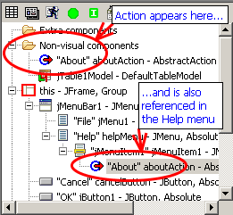
Testen Sie das
Formular mit der Schaltfläche "Vorschau"
Klicken Sie "Vorschau"
in der Gliederungsansicht, und klicken Sie auf das Menü "Hilfe"
– Der "About"-Menüpunkt sollte sich nun zeigen.
Sie können auch die
Größe des Formulars ändern und testen, wie es sich
verhält.
Wenn ein Element sich horizontal oder vertikal
ausdehnt, das aber nicht soll, stellen Sie die passenden "Expands"
Option ein (siehe Seite 6 unten). Die Optionen "Reset to default
width/Height" bewirkt, dass ein Element seine Standard-Breite
oder Höhe behält.
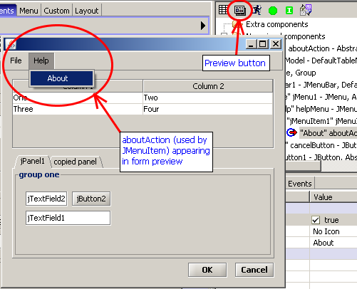
Erstellen eines
"About"-Dialog-Fensters und die Einbindung in das
Hauptfenster
Ergänzen Sie
einen JDialog
Entweder Sie klicken mit
der rechten Maustaste auf einen Bereich außerhalb des
Haupt-JFrame und wählen "Add-Container> JDialog"
oder Sie wählen das Symbol aus dem JDialog "Container"-Icon
und klicken irgendwo außerhalb des Haupt-JFrame.
Das wird
eine völlig getrennte Instanz der Klasse JDialog hinzugefügt.

Beachten
Sie den Knoten in der JDialog Gliederungsansicht. Die rote Umrandung
zeigt an, dass dieses Element das "aktive" Wurzel-Element
ist, und im Formular-Editor angezeigt wird.

Klicken
Sie auf den "this"-Knoten – das Hauptformular
erscheint. Dann klicken Sie den "jDialog1" Knoten, und Sie
sind zurück im soeben erstellten JDialog.
So können Sie
Jigloo verwenden, um mehrere "root design" Elemente in der
gleichen Java-Klasse zu gestalten.
Setzen Sie das
GroupLayout und fügen ein JLabel-Element und einen OK-Knopf ein.
... verwenden Sie dafür
die weiter oben erlernten Techniken.
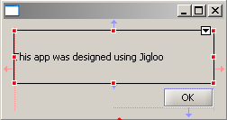
Setzen Sie
HorizontalAlignment auf CENTER (und machen Sie HorizontalAlignment zu
einer Basic- Eigenschaft)
Wählen Sie das
Label aus, und im "GUI-Eigenschaften"-Editor öffnen
Sie die "Expert"-Modus mit der rechten Maustaste.
Navigieren Sie zu "HorizontalAlignment". Ändern Sie
dies in "Center".
Nun, wenn Sie denken, dass Sie diese
Eigenschaft sehr oft nutzen, dann mit der rechten Maustaste darauf
und wählen Sie "Set Property Categorie for
HorizontalAlignment->Basic".

Die
HorizontalAlignment Eigenschaft (für alle Elemente, die es
haben) wird nun im Rahmen der "Basic"-Eigenschaften
erscheinen.
Ergänzen Sie
Aktionen zur Schaltfläche OK, um das Dialogfenster zu schließen
Nun fügen Sie
wieder eine "Close" Aktion ein, um die Form zu schließen.
Wählen Sie "AbstractAction" aus der "More
–Components“-Palette, aber dieses Mal klicken Sie
irgendwo auf den Editor außerhalb des JDialog. Setzen Sie den
Text auf "OK" und den Namen zu closeAboutAction. Dann gehen
Sie in die die Gliederungsansicht und ziehen Sie die neu hinzugefügte
Aktion (befindlich in den "Extra-Components") zur
Schaltfläche "OK" des Dialogs.
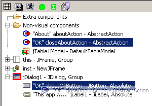
Die
Aktion sollte nun doppelt angezeigt werden: Einmal unter der
"Extra-Components" und einmal unter der Schaltfläche
"OK" des Dialogs. Wenn Sie die Aktion von der Schaltfläche
trennen möchten, wählen Sie einfach die Aktion unter dem
Button und drücken Sie die Taste "Entf". Ein Dialog
fragt Sie, ob Sie die Aktion wirklich löschen wollen, aber
Jigloo wird wirklich nur die Aktion aus dem Knopf löschen, und
nicht die Aktion selbst! Wenn Sie wirklich die Aktion löschen
wollen, wählen Sie sie zuerst unter dem
"Extra-Components"-Knoten aus.
Nun suchen Sie die
close-Aktion unter dem OK-Knopf in der Gliederungsansicht, und
doppelklicken Sie darauf. Der Source Code wird angezeigt und der Code
der close-Aktion Code wird hervorgehoben.

Bearbeiten
Sie den Code durch Hinzufügen von
getJDialog1().Dispose()
so dass der Dialog
geschlossen wird, wenn die OK-Taste angeschlagen wird.
Fügen Sie Code
ein um das Dialogfenster mit der aboutAction zu öffnen
Wir werden den Code
aboutAction hinzufügen, also klicken Sie doppelt auf die
aboutAction in der Gliederungsansicht. Fügen Sie folgenden Code
ein:
getJDialog1().pack
();
getJDialog1().setLocationRelativeTo
(null);
getJDialog1().setVisible
(true);
Schreibe einen
Accelerator (Hot-Key) für die "Über"-Aktion
Wir wollen die Menschen
in der Lage versetzen, zu sehen, um was es bei unserer Anwendung
geht, richtig?
Wählen Sie die Aktion about, und in den
GUI-Editor Properties wählen Sie die "Accelerator"
Eigenschaft - sie wird im Rahmen der "Expert"-Knoten sein,
aber vielleicht wollen sie sie auf die "Basic" Knoten
verschieben? Wie dies geht, wurde bereits beschrieben. Um die
Tastenkombination CTRL + SHIFT + A zuzuweisen, drücken Sie diese
im Eingabefeld für Accelerator, und Sie sollten sehen, dass
"ctrl shift A" im "Accelerator"-Wert angezeigt
wird
.
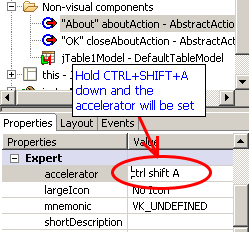
Dann
drücken Sie "Return", und sofort wird der Code
aktualisiert.
Sie
können sich auch einen Hot-Key mit der Aktion in ähnlicher
Weise verbinden. Hier kann der Benutzer einen Menüpunkt durch
Drücken einer Taste (z.B. „A“) auslösen. Dies
funktioniert aber nur, wenn das übergeordnete Menü sichtbar
ist.
Das Ausführen
der Anwendung
Herzlichen Glückwunsch!
Sie sind fertig! Drücken Sie STRG + S, um das Formular zu
speichern. Ein schneller Weg, um die Main-Methode der Klasse zu
starten, ist die Schaltfläche "Run" in der
Gliederungsansicht.

Der
Hauptrahmen sollte in der Mitte des Bildschirms erscheinen.
Hinweis: Wenn Elemente bei der Ausführung nicht in
„angemessener“ Größe erscheinen, versuchen Sie
diese im Jigloo Editor auszuwählen, und wählen Sie "Reset
to Width / Height" aus dem Menü Alignement.
Versuchen Sie die
Tastenkombination CTRL + SHIFT + A – um das About Menü
anzuzeigen - Woo Hoo!
Am Ende können Sie auf die
Schaltfläche "OK" klicken, was den Dialog schließt.
Hinweis: Falls Sie einen
Fehler "java.lang.UnsupportedClassVersionError: Bad
Versions-Number in Class-File" werhalten, , stellen Sie sicher,
Ihr Compiler Compliance Level (mithilfe des Properties-Dialoges des
Projektes) der gleiche ist, wie der der Java-Version, mit der Sie
Ihre Klasse ausführen.
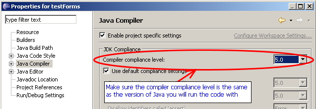